Depois dos 50 anos a pele da mulher fica mole, flácida e com rugas — e nenhum creme caro vai resolver isso.
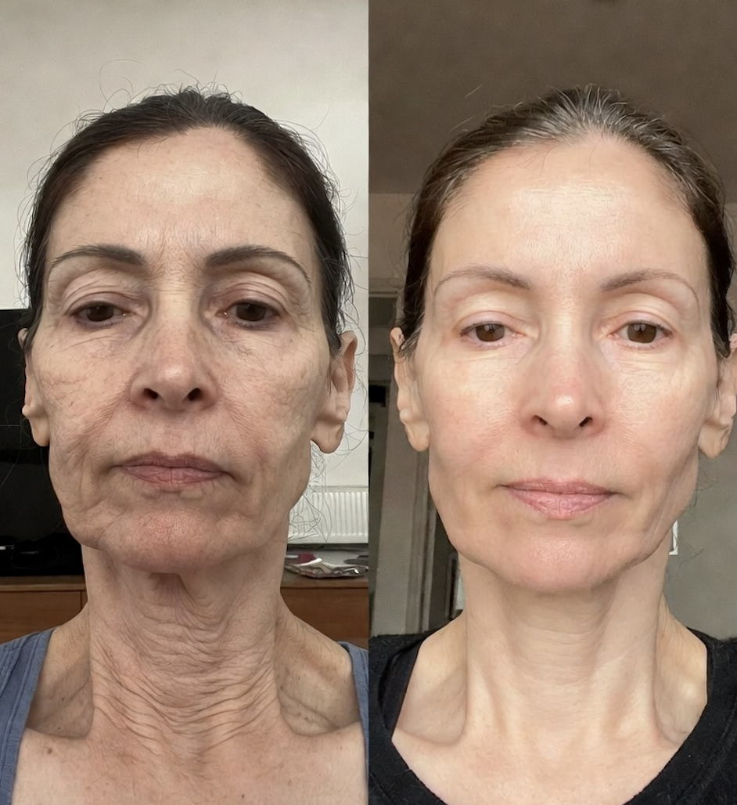
Descubra agora como você pode reverter o envelhecimento da sua pele de forma natural, sem precisar comprar nenhum produto.
Quantos anos você tem?
Essa resposta personaliza todo o seu protocolo.
O que mais te incomoda hoje quando você se olha no espelho?
Pode marcar quantos quiser.
Como está a textura da sua pele hoje quando você toca?
Sandra: "Isso é o que eu chamo de pele em fase de queda livre — quando o colágeno cai, ela amassa e desidrata ao mesmo tempo. A boa notícia é que dá pra reverter."
Sandra: "Não é só na pele que falta colágeno. Ele também sustenta seus músculos, suas articulações e sua disposição. Por isso é importante eu saber:"
Você sente alguma dessas coisas hoje?
Pode marcar mais de uma.
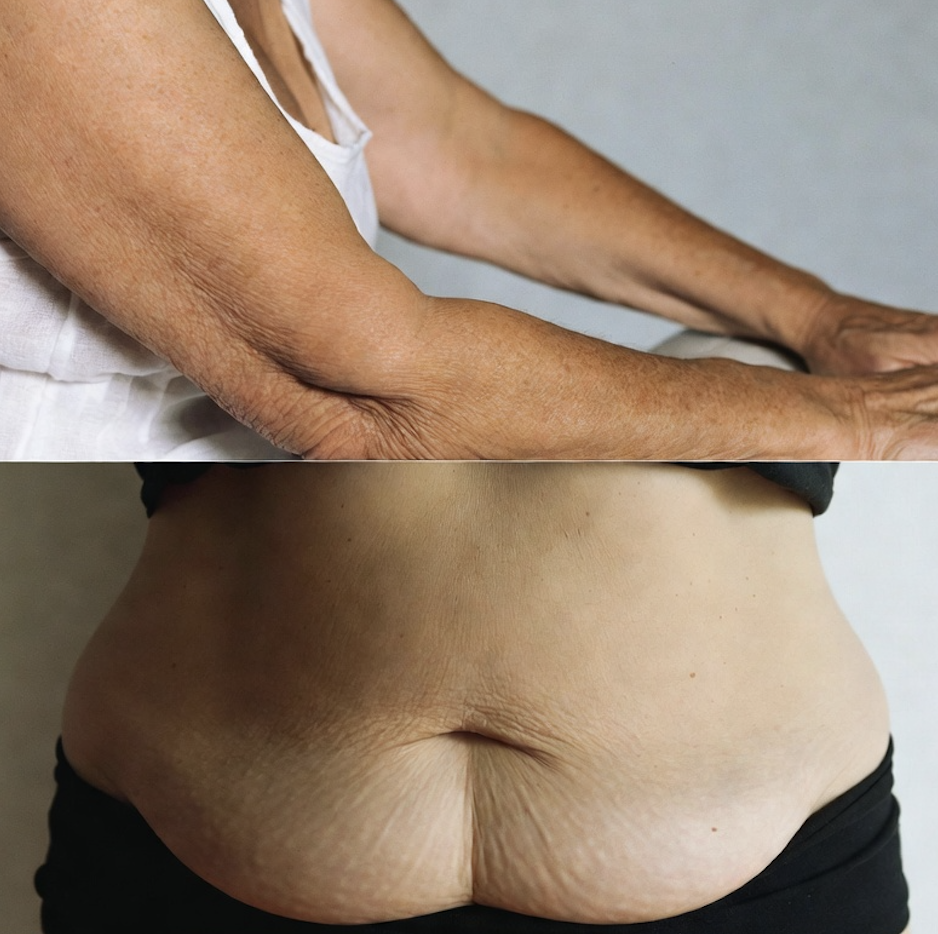
Quantos anos as pessoas costumam te dar quando te conhecem?
Sandra: "Anota essa resposta. Daqui a 8 semanas seguindo o Método EA, eu te pergunto de novo — e a resposta vai mudar."
Você já tentou alguma dessas coisas pra reverter?
Pode marcar mais de uma.
Sandra: "Eu também já tentei TUDO. Gastei mais de R$ 18 mil em 3 anos. Até descobrir que o problema não tava do lado de fora — tava no que meu corpo PAROU de produzir por dentro."
Você está na menopausa?
Sandra: "Independente do seu caso, o Método EA funciona — porque ele REATIVA a produção natural do hormônio da beleza, mesmo em mulheres que já passaram da menopausa há anos."
HISTÓRIA REAL · ALUNA DO MÉTODO EA
Olha o que aconteceu com a Maria, 56 anos
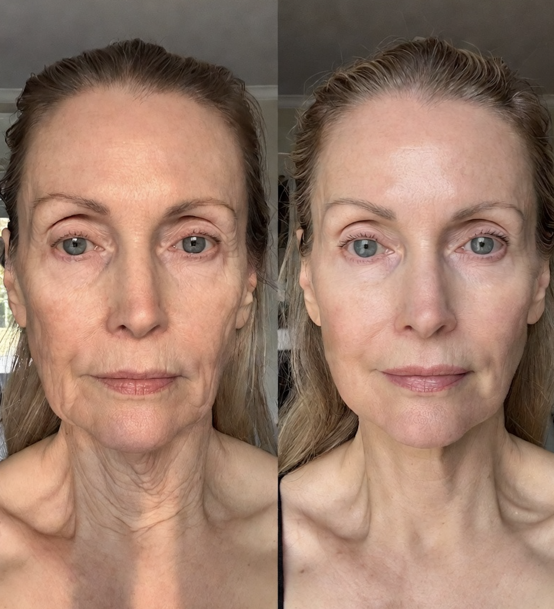
Maria, 56 anos · 2 semanas no Método EA
Sandra: "A Maria é do interior de Minas. Em 2 semanas seguindo o Método EA, ela mudou TANTO a pele do colo que o marido perguntou se ela tinha feito alguma cirurgia. Ela não fez NADA — só 10 minutos por dia e os 7 alimentos antioxidantes que eu mandei."
Quantos minutos por dia você consegue tirar pra cuidar de você?
Sandra: "Perfeito. O Método EA foi DESENHADO pra caber em 10 minutos. Nem se você quisesse fazer 1 hora seria melhor — é uma rotina específica de ativação hormonal, mais que isso perde o efeito e vira treino comum."
Você come alimentos antioxidantes (frutas vermelhas, oleaginosas, açafrão, etc) com frequência?
Sandra: "Não se preocupe — você não vai precisar CORTAR nada da sua alimentação atual. A gente só vai INCLUIR os 7 antioxidantes da juventude."
A DESCOBERTA
Por que sua pele caiu — e o método de 10 minutos que reverte isso
Sandra Vilela, 58 anos
Criadora do Método EA · +10 mil mulheres atendidas
Olha, depois de 7 anos estudando e testando comigo mesma — eu tenho 58 anos hoje — eu descobri o seguinte:
Depois dos 45, sua produção de estrogênio despenca. Isso não é só "menopausa" — é o seu corpo deixando de fabricar o hormônio que MANDA o organismo produzir colágeno.
Sem colágeno:
Sua pele afina e enruga
Seus músculos ficam fracos
Joelho, coluna e ombro começam a doer
Sua disposição vai embora
A maioria dos médicos oferece reposição hormonal. Funciona, mas tem efeitos colaterais, é cara, e nem toda mulher pode tomar.
O que eu descobri é que existem 3 tipos de exercícios específicos — chamados de Exercícios Ativadores de Estrogênio — que estimulam seu corpo a voltar a produzir estrogênio naturalmente. Em qualquer idade. Mesmo na pós-menopausa.
Quando você combina 10 minutos por dia desses exercícios com os 7 Antioxidantes da Juventude (que você só INCLUI na sua dieta atual, sem cortar nada), o resultado é:
Em 2 semanas — a pele começa a se hidratar por dentro
Em 4 semanas — você sente menos dor e mais disposição
Em 8 semanas — a pele do rosto, colo e mãos fica nitidamente mais firme
Em 12 semanas — as pessoas começam a duvidar da sua idade
Isso aqui é o Método EA — Estrogênio Ativo.
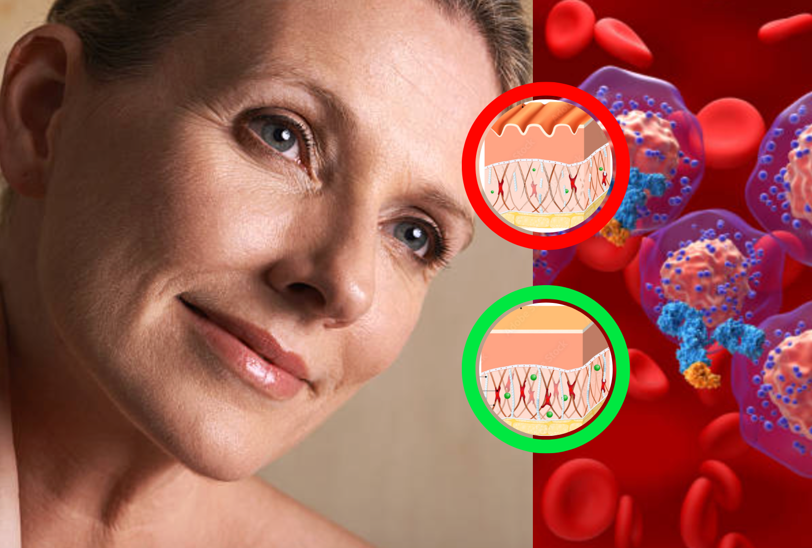
Se em 8 semanas você se olhasse no espelho e visse sua pele FIRME, suas dores SUMIDAS e sua disposição de volta — o que isso mudaria pra você?
Sandra: "Anota essa resposta. Em 8 semanas eu te pergunto se aconteceu."
Cruzando suas respostas...
Analisando suas respostas...
Comparando com 4.700+ mulheres acima dos 50...
Identificando seu Tipo de Pele Madura...
Calculando seu protocolo personalizado...
SEU RESULTADO ESTÁ PRONTO
Pra onde eu envio seu diagnóstico completo?
Preciso desses dados pra te enviar o resultado e seu protocolo personalizado.
Seus dados estão seguros · não enviamos spam
🌹
SEU TIPO DE PELE MADURA
Pele Madura
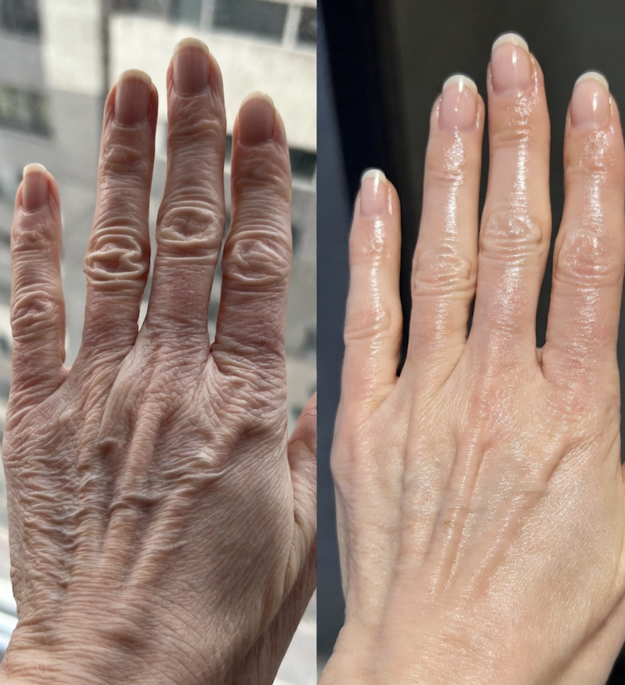
Regina, 61 anos · resultado de 4 semanas no Método EA
Sandra: "Lindona, olha a Regina, 61 anos. Quando ela começou, era do seu mesmo tipo. As mãos dela eram a maior dor — não usava mais pulseira nem aliança fina porque ficava feio. Em 4 semanas: olha como tá hoje."
Lindona, você está disposta a investir 10 minutos por dia + incluir 7 alimentos novos na sua rotina pelos próximos 90 dias?
Sandra: "Eu vou estar com você TODO DIA pelo WhatsApp. Você não vai fazer sozinha."
Isso é o que vai chegar pra você dentro do Programa Renascimento:
Cardápio Antioxidante Personalizado — pro seu Tipo, revisado periodicamente pela Sandra
Rotina de Exercícios Ativadores de Estrogênio — 10 minutos por dia, em casa, sem academia e sem equipamentos
Protocolo dos 7 Antioxidantes da Juventude — incluir na sua dieta atual, sem cortar nada
WhatsApp direto com a Sandra — você tira suas dúvidas todo dia útil
App do Programa Renascimento — pra acompanhar sua evolução semana a semana
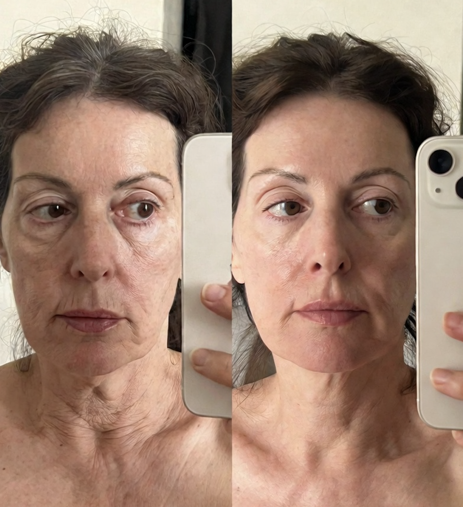
"Eu não acreditei quando minha filha me disse que eu tava parecendo a irmã mais nova dela. Em 12 semanas o pessoal da igreja começou a perguntar o que eu tava fazendo. Eu só faço 10 minutos por dia e tomo os shots de antioxidante que a Sandra mandou. Mais nada."
Solange, 64 anos · São Paulo
Quando você quer começar a transformar sua pele?
Sandra: "Perfeito. Eu separei sua vaga no grupo de WhatsApp que começa essa semana."
UM CASO QUE QUEBRA RESISTÊNCIAS
Marlene, 58 anos, e o cálculo do colo dela
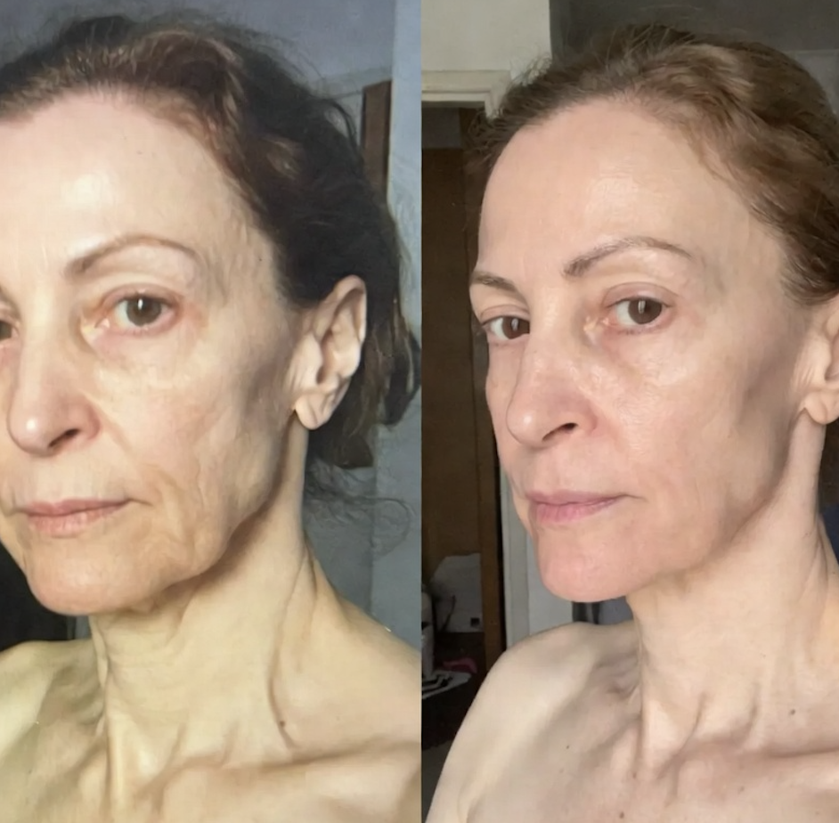
"Já gastei mais de R$ 22 mil em estética em 4 anos. O Método EA me custou menos que UMA sessão de laser que eu fazia. E em 90 dias eu tava com a pele mais firme do que com 3 anos de procedimento. Não é exagero."
Marlene, 58 anos · Belo Horizonte
Sandra Vilela, 58 anos
Criadora do Método EA
Uma carta minha pra você antes da gente terminar
Olha, eu te falo de coração. Eu cheguei aos 51 parecendo ter 60. Tinha dor em todo lugar, e quando eu olhava as minhas fotos do casamento — 15 anos antes — eu chorava sozinha no banheiro.
Eu não tinha dinheiro pra estética cara. Então eu estudei. Testei comigo. Errei muito.
Quando comecei a fazer o Método EA do jeito certo, em 8 semanas as pessoas começaram a me parar na rua perguntando o que eu tinha feito.
Hoje eu tenho 58 anos e ninguém acredita.
Eu quero fazer com você o mesmo. Por isso o investimento é o mais simbólico possível — pra toda mulher conseguir entrar.
SUA VAGA ESTÁ RESERVADA
Escolha como você quer começar, lindona:
Sua vaga + esse preço expiram em:
15:00
Plano Trimestral
3 meses de acompanhamento com a Sandra
R$ 266
ou 3x de R$ 88,66/mês
Cardápio Antioxidante personalizado
Rotina de Exercícios Ativadores de Estrogênio (10 min/dia)
Protocolo dos 7 Antioxidantes da Juventude
WhatsApp direto com a Sandra por 90 dias
App do Programa Renascimento
1 TRIMESTRE GRÁTIS
Plano Anual
1 ano inteiro de acompanhamento — pague 9 meses, leve 12
Cardápio revisado a cada 60 dias com novidades de estação
BÔNUS: Protocolo Pele Avançada (rosto, colo e mãos)
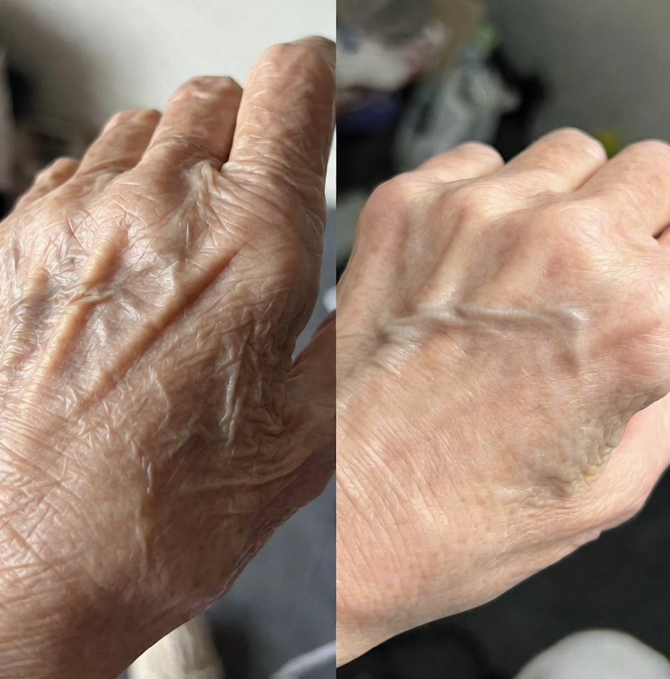
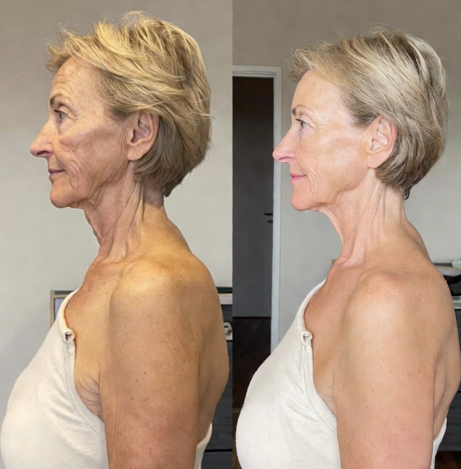
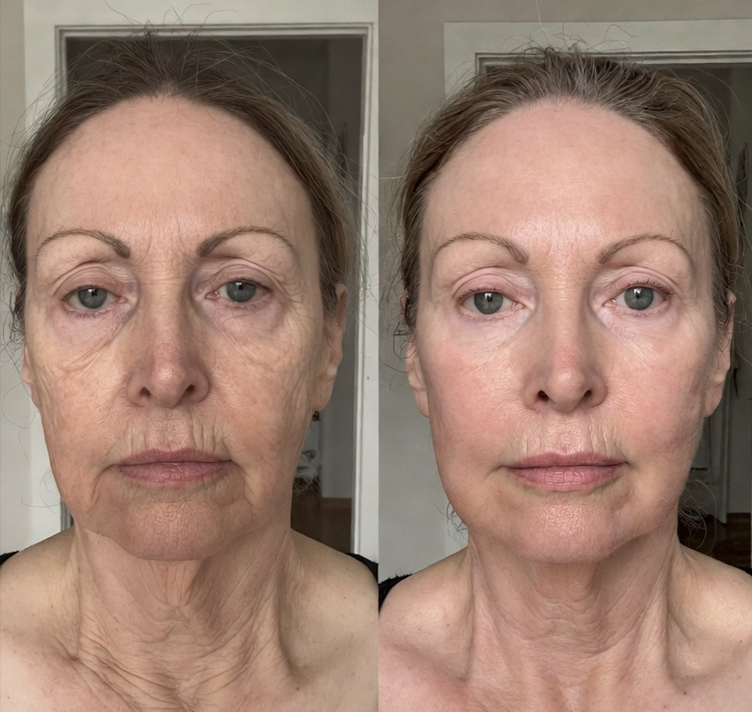
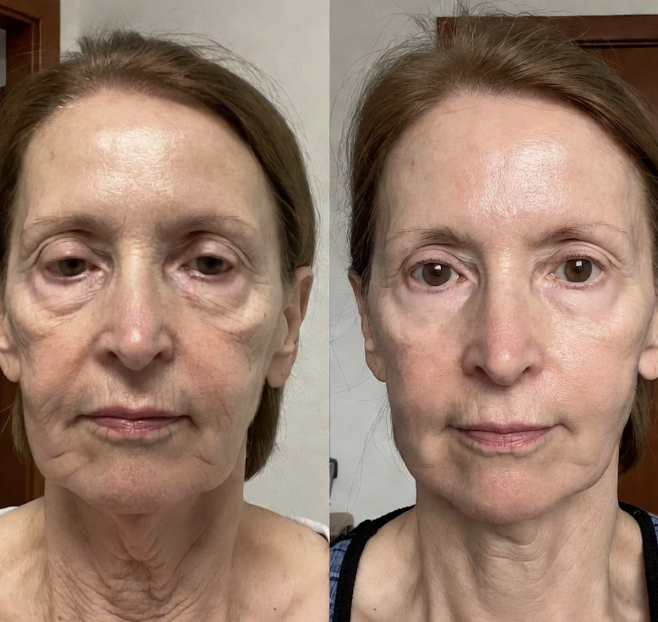
Mais resultados reais de alunas do Método EA
🛡️ Garantia incondicional de 7 dias
Se em 7 dias você não sentir que esse é o caminho certo pra você, eu devolvo seu dinheiro. Sem pergunta, sem burocracia.
Pagamento seguro · Hubla · Cartão, Pix ou Boleto
Perguntas frequentes
Funciona se eu já estou na menopausa há muitos anos?
SIM. O Método EA foi desenhado especificamente pra reativar a produção natural de estrogênio mesmo em mulheres em pós-menopausa avançada. A Sandra tem alunas com 70+ anos com resultados ótimos.
Preciso de academia ou equipamentos?
NÃO. Só seu peso corporal, em casa. Os Exercícios Ativadores de Estrogênio levam 10 minutos por dia — você nem precisa trocar de roupa.
Eu não cozinho — consigo seguir o cardápio?
SIM. O cardápio prioriza alimentos prontos saudáveis e shots de 2 minutos. E você não corta nada da sua dieta atual — só INCLUI os 7 antioxidantes.
SIM. Os exercícios são de baixíssimo impacto e a Sandra adapta tudo pela conversa no WhatsApp. Só evite se tiver recomendação médica de repouso absoluto.
E se eu não tiver resultado?
Garantia incondicional de 7 dias. Mande um e-mail e a gente devolve. Sem burocracia, sem pergunta.
Como é feito o pagamento?
Pelo Hubla (plataforma segura, igual Hotmart). Aceita cartão (parcelado), Pix e boleto.